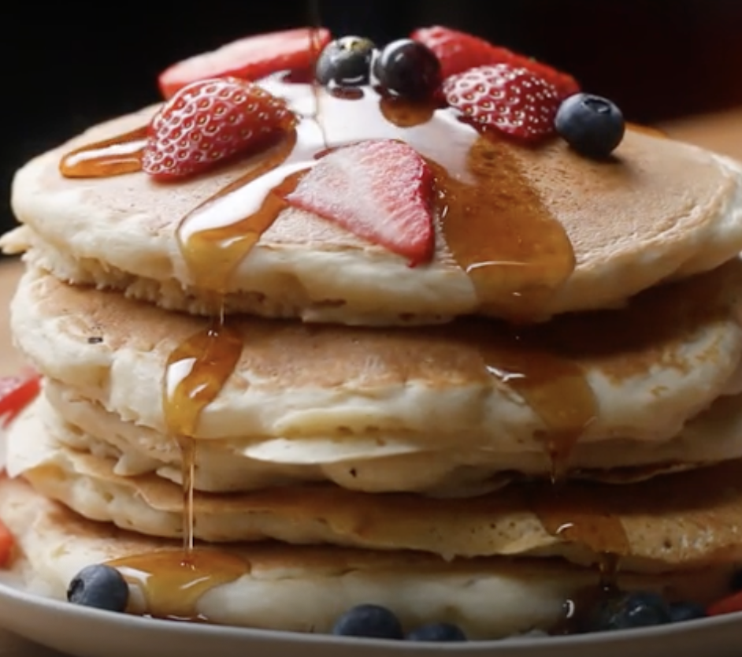

Pasta Aglio e Olio

Description
Super tasty and fluffy pancakes that are also completely vegan!
This recipe was found on Tasto.co
Ingredients
- 1 cup flour (125 g)
- 2 tablespoons organic sugar
- 1 tablespoon baking powder
- ½ teaspoon salt
- 1 cup non-dairy milk (240 mL)
- 1 tablespoon apple cider vinegar
- 1 teaspoon vanilla
- maple syrup, to serve
Steps
-
In a medium bowl, add the flour, sugar, baking powder, and salt, and stir to combine.
-
In a medium bowl or liquid measuring cup, add almond milk, apple cider vinegar, and vanilla, and stir to
combine
-
Pour the liquid mixture into the dry mixture and whisk until smooth.
-
Let batter rest for 5 minutes.
-
Pour about ½ cup (65 grams) of batter onto a nonstick pan or griddle over medium heat.
-
When the top begins to bubble, flip the pancake and cook until golden.
-
Serve warm with maple syrup.
-
Enjoy!
Return to Top
Return Home